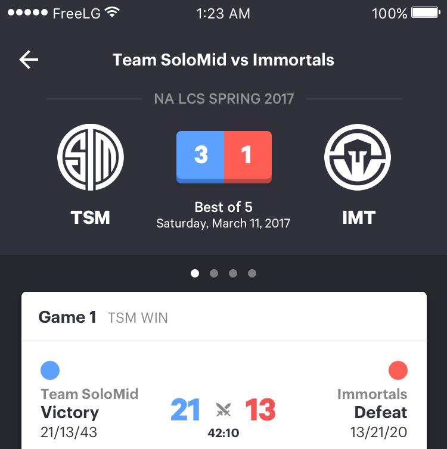
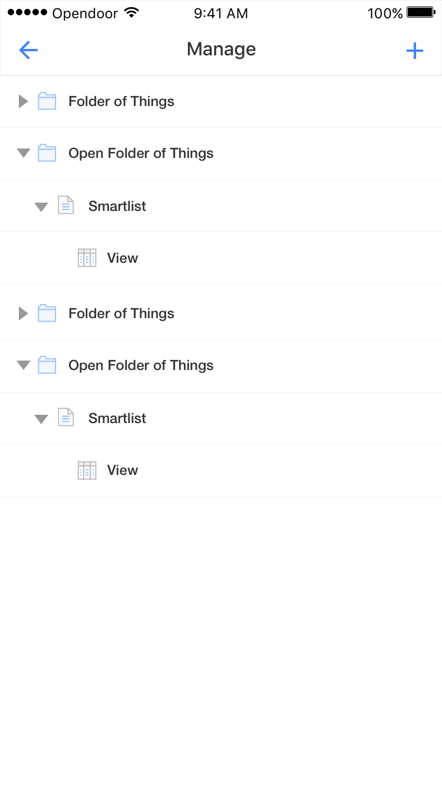
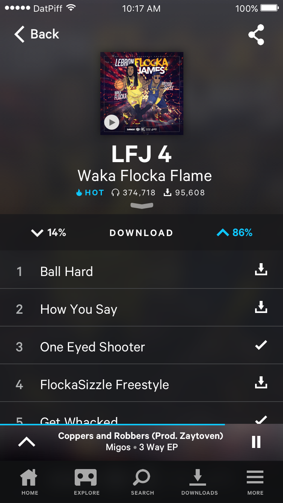

Challenges & Redesigns
Some assorted work I've done as either personal redesigns or interview design challenges. All completed design challenges ended up taking me onsite, but I was unable to accept any full-time offers because I ended up choosing to take a sabbatical from school for a semester.
In order - an eSports app, data management design challenge, mixtape app redesign and eCommerce design challenge.
eSports
I've been a close follower of LoL eSports since 2012, and my favorite team is Team Solomid, who play in the North American league. Unfortunately, as much as I'd like to, I can't watch each match live, so I have to track scores and live action on apps & Twitter.
However, each of the popular solutions - Strafe, Instant eSports (now Blitz), Yahoo eSports, theScore eSports - is pretty flawed in how they show progression of a match, instead showing post-match statistics and overviews which I can find on Reddit.
Here is the main screen of the application. I started off sketching the app in my grid book, figuring out the information hierarchy.
When I watch a match and look at a recap, the most important pieces of information are in order: victory/defeat, kills, gold, game objectives, and then player-by-player contribution.

No app had a visual representation of gold over time - the difference in gold is the most accurate representation of a game is going - difference in gold contributes to item differences and hence overall team power. I decided to incorporate an Apple Health-like interface (I'd be glad to show you in person!), like steps/day tracking to make tracking how a game was going easy on the eye. The areas under the line make it very easy to see at a glance how a game is going at any point in time.
Data Management System
This was a design challenge entailing a data management system for a collection of financial assets. I can't write about the specifics, but I can talk through my design decisions in person if you're interested! The entire task took me around 3 hours, and included all the flows and interactions between each type of assets, as well as desktop and iOS flows.




DatPiff Redesign
DatPiff is a mixtape distribution service - which means it's a way for hip-hop artists to distribute music for free. I did a heuristic analysis and subsequent redesign of their iOS app.
It's no secret that I'm a huge fan of hip-hop music - and mixtapes are the best ways for artists to give back to their fans, to get known, and to make their mark. The model seems a bit outdated; on the site, mixtapes are put up for download and are only streamable via DatPiff's proprietary player.
The iOS app is similarly dated - the mobile app received an overhaul a couple of weeks ago, but still exhibits the same flaws as before. I decided to evaluate the app heuristically after I realised that my complaints to my friends about 'how weird the app felt' had no grounds without basis.
I use DatPiff every day, because nobody else has a streamable version of the Future & DJ Esco mixtape.
Original App Evaluation
I'll start with a list of Jakob Nielsen's user interface usability heuristics.
They're described in more detail here.
Visibility of system status
Match between system and the real world
User control and freedom
Consistency and standards
Error prevention
Recognition rather than recall
Flexibility and efficiency of use
Aesthetic and minimalist design
Help users recognize, diagnose, and recover from errors
Help and documentation
I took three main screens and evaluated them based on which heuristics were violated. I start with the heuristic violated, the severity (1-4), and a justification of that rating.
Highlighted Mixtapes
The highlighted mixtapes screen is the first page the user lands on - it shows the user highlighted mixtapes, or sponsored/popular content. Multiple heuristics are violated here.
"Highlighted Mixtapes", or the default page.
Visibility of system status: 2
An important thing to note is that the circle in the top right indicates what song/mixtape is currently being played - but with that there is no indication of the song status, or how much of the song has been listened to so far.
This is a minor usability problem, as the express purpose of the app is to listen to mixtapes end-to-end and progress of a song should not weigh into choosing another song, for example. More popular and general-purpose music streaming apps like Spotify/Apple Music/Google Play Music have a horizontal bar tracking the progress made into the current song which allows users to anticipate music coming up.
Aside from this, the blue bars and red circular icon are hard to decipher. Upon viewing in more detail, the blue bars mean the overall approval percentage rating (percentage of upvotes versus downvotes) and the red marks indicate a ‘staff pick’. Both of these are important, but still are not egregiously wrong as they can be figured out upon looking at the other pages in the app.
Flexibility & efficiency of use: 2
The screen does not allow users to listen to a mixtape with a single tap, nor does it allow users to play/pause progress on the song being played from the main screen. These are common affordances of other music apps, as they allow for better curation and control. The actions are still able to be accomplished (listening and play/pause) but require 2–3 more taps. The fact that every page can only show ~4 mixtapes is irritating, as a lot of scrolling must be done to navigate the selection of mixtapes (in addition to the fact that scrolling is always less friction than searching when the desired outcome is definitely accessible).
Aesthetic & minimalist design: 2
The limited screen real estate is accentuated by the fact that there is a banner ad that’s unremovable. Only 4 mixtapes are visible at any time with large font sizes, which is a trivial amount of albums, which ends up requiring a lot of scrolling to curate a week’s amount of music.
Now Playing
The now playing screen is accessible from the top right of every navigation menu. It allows users to control playback of the selected song and mixtape, and download the mixtape being played.

Now Playing, or the page to control playback
Aesthetic and minimalist design: 3
The cover of the mixtape, name, and bulkiness of the control layout takes up valuable screen space, meaning the track list starting at the bottom is barely visible and in some cases, especially when the user has her finger around the bottom of the screen, entirely invisible. This has the potential to completely disguise an integral part of the app, which warrants its severity rating. In addition to this, the buttons on the bottom are ambiguous and give little indication of what they do - the one on the left downloads the mixtape, and the one on the bottom right scrolljacks the screen, moving down to reveal the tracklist.
Flexibility and efficiency of use: 4
The app doesn’t offer scrubbing - there’s no way to return to or seek out a certain point in time of a song being played. This means there’s no way to ‘recover’ progress if a song is skipped or rewound. This is a catastrophe in usability, as there are many use cases in which a user would like to seek out a specific point in a song. In addition to this, the screen isn’t easily accessible, and has a small area of space assigned to open it (the small circular album cover in the top right), which is difficult for many users especially with large screens who have their hands placed near the bottom of the phone to access. The buttons to control playback are also small and difficult to reach.
User control and freedom: 3
As stated before, there’s no way for the user to scrub forward or backward in the song, which means there’s effectively no ‘undo’ button for skipping or rewinding a track. When the user presses the ‘show track list’ button, there’s no equivalent button to skip back up, and there’s no way to ‘un-download’ a mixtape from the screen if pressed by accident. These combined don’t break the app’s usability, but are a major quality of life problem in case of unintentional app interactions.
Recognition rather than recall: 1
When the user scrolls down to view the tracklist, the album cover, name and artist are obscured. While presumably the user will understand and remember who the artist was, it relies on momentary recall instead of keeping the artist visible at all times, which saves some cognitive burden.
Search
Many of the other screens are identical to that of the main screen, so instead I will focus on the search screen. When searching for anything mixtape-related, be it a title, artist, or category, this screen is presented to the user.
Searching for content is done through this page.
Visibility of system status: 2
This screen in particular does not allow the user to see what she is listening to while interacting with the screen. This isn’t a major qualm as the use cases for the search screen don’t require knowledge of what’s being listened to; however this adds an extra step when trying to navigate to what is being listened to currently.
Aesthetic and minimalist design: 3
The unorthodox method of showing popular search outcomes (like a tag cloud) is an inefficient way of displaying data - it gives no quantitative information, and prohibits more results from being shown in the same space. Additonally, when letters are typed into the search, instead of showing relevant results in a list, they instead repopulate the tag cloud. This results in a nonhierarchical and confusing display of search results, which makes searching difficult, albeit not impossible.
User control and freedom: 1
There’s no way to exit this screen directly, i.e. a ‘back’ button or any way to view the now playing screen. This again is not an app breaking feature, but adds more steps to the app’s use.
Solution & Implementation
As above, I evaluated every screen and redesigned it in accordance with usability heuristics. But before that, I had to do some user research.
Nobody in my close circle was particularly interested in underground or obscure hip hop releases, so I went on the internet to learn a bit about the background of mixtapes. They're always free, generally less polished/refined releases meant to showcase an artist's style or expositions, and are typically listened to start to finish, and a lot of mixtapes have a single narrative and skits between songs. This behavior means a shuffle functionality isn't really necessary, and mixing and matching songs into playlists isn't necessary; no mixtape site supports this either.
Every mixtape distribution channel (DatPiff, LiveMixtapes, HotNewHipHop) relies on a like/dislike system in percentages to gauge whether or not a mixtape is received favorably. Artists, especially up and coming ones, pay close attention to the download statistics (most mixtapes are free to download, not just stream), and rating statistics; by proxy, users also use these to gauge whether or not artists are worth keeping track of.
I started off with some sketches in my grid notebook, but unfortunately my notebook ended up being waterlogged, so I couldn't collect photos after the fact. I'd be happy to walk you through it, though!
Home/Highlighted Mixtapes
This serves as the new home/default page. It shows simultaneously the highlighted (sponsored) mixtapes, which scrolls horizontally, and the new mixtapes, which scrolls vertically.
Redesigned the default page.
The rationale is that the highlighted mixtapes still catch the user's eye, while new mixtapes vastly outnumber the sponsored tapes. 'Highlighted' tapes don't change that often, whereas new tapes get uploaded every day. This way, highlighted mixtapes still retain their screen real estate and place in the information hierarchy. Mixtapes come with a percentage rating and a 'hot' indicator as judged by staff, which is already featured in the app - this is a good way for the user to gauge interest.
You may also notice that I've included a 'now playing' indicator bar at the bottom of each screen as well as navigation tabs - this simplifies getting everywhere and puts everything in view (thanks Julie Zhuo!), and affords the user information about the song status.
Mixtape Details
These are the new screens for 'mixtape details', or what is akin to an album page. This is quite standard for an information page; the titles, the album art, and tracklisting. What's different now is that I've included small form statistics about number of plays, downloads and whether or not the mixtape is 'hot', or a staff pick/trending tape. This just gives the user more information to evaluate if it's worth checking out, as well as good statistics for trainspotters, A&Rs, agents, artists, etc.

Mixtape details and a signifier to drag up, revealing rating and download.
I struggled with the notion of rating a mixtape and downloading an entire mixtape - these are actions taken because the user has a strong opinion about whether or not a piece of music is well made. I didn't want the buttons to be out in the open and open to mispress, nor did I want the user to be confronted with their judgment of it every time they opened the mixtape, so I decided to hide a menu for it with the white bar.
With the advent of iOS8, 9 and 10, the 'slide up' signifier is firmly implanted in public consciousness. I placed it under the information of the album; it constantly being there signals that there's something underneath that a vertical dragging motion can accomplish. Dragging it up would reveal an upvote/downvote system with appropriate percentages, as well as a 'download' button to download every song in the mixtape. After the user has completed the action, they can slide it back down so it's unintrusive.
Now Playing
Unlike the previous iteration of the app, I've included a full-screen 'now playing' screen. This is pulled up from the bar along the bottom of the screen - tapping the caret brings up the menu from the bottom, and it takes up the entire screen. It takes up the entire screen, obscuring the tabs to prevent mispresses - unless the user is actively curating, this will be the most active screen once the user decides to listen to a mixtape.
Now playing. Pressing the tracklist/queue (top right) reveals the tracklist and the user's progress through the tape.
The standard array of features (download, AirPlay, scrub) are present, and the user can tap the button in the top right to toggle between album cover view and tracklist view. Instead of opting to cover up the play controls when viewing the queue like most music apps, I have it shown as sequentially listening through and 'skimming' through a mixtape is pretty common, as opposed to full fledged albums.
Search
Finally, the search screen is bog standard - instead of a convoluted tag cloud, popular searches are shown in a dynamic list that changes based on the input real-time. This makes it easier for the user to find out that one mixtape on the tip of their tongue.
The search screen.
eCommerce Design Challenge
I designed an eCommerce application as part of a design challenge (Yelp). The prompt was any sort of eCommerce experience - I ended up designing a mobile interface and flow for a vinyl/CD store. I've attached some screens below, but as always, if you'd like to hear more about my rationale, I'd be glad to chat to you in person. This exercise took a bit under three hours.
There were a few things that needed to be considered when
designing a record store app - every album, EP, or single, and
especially the classics had multiple prints, and in different formats
too - some have special variations in terms of cover art, box, even
the colour of the vinyl itself. These variations had to be accounted
for and the information made accessible.
Due also to the fact that these were physical products and often
collectors’ items, condition of a record being sold was also very
important. The scale espoused by many record dealers is the
Goldmine Standard, found here.


←Previous Project (Innovative Design)
"Highlighted Mixtapes", or the default page.
Now Playing, or the page to control playback
Searching for content is done through this page.
Redesigned the default page.
Mixtape details and a signifier to drag up, revealing rating and download.
Now playing. Pressing the tracklist/queue (top right) reveals the tracklist and the user's progress through the tape.
The search screen.
eCommerce Design Challenge
There were a few things that needed to be considered when designing a record store app - every album, EP, or single, and especially the classics had multiple prints, and in different formats too - some have special variations in terms of cover art, box, even the colour of the vinyl itself. These variations had to be accounted for and the information made accessible.
Due also to the fact that these were physical products and often collectors’ items, condition of a record being sold was also very important. The scale espoused by many record dealers is the Goldmine Standard, found here.
←Previous Project (Innovative Design)